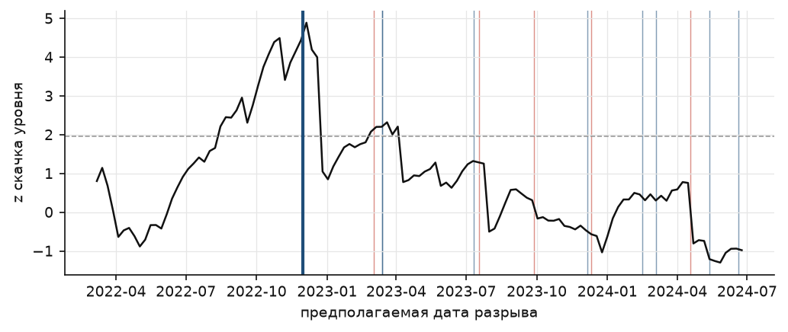
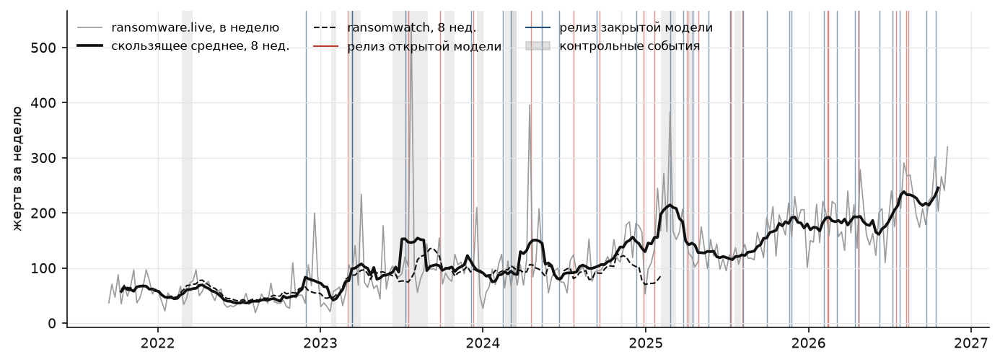

| Аналог | Киллер-фича | Берём? | Почему |
|---|---|---|---|
| ransomware.live | Почти real-time сбор с сотен лик-сайтов, разметка по стране и отрасли, дата атаки отдельно от даты поста | Да | Наш основной источник. По паре дат отличаем эффект атаки от эффекта публикации |
| ransomwatch | Независимый краулер, открытый дамп в git | Да | Второй источник для проверки. Не обновляется с весны 2025 года |
| Hackmageddon | Ручная разметка каждого инцидента: мотив, техника, цель | Нет | Ручная работа одного автора, только помесячно, скриптам отдаёт 403 |
| CISA KEV | Подтверждённая эксплуатация и флаг использования шифровальщиками | Да | Технический ряд для H4 и метрика «дни до эксплуатации» |
| Exploit-DB | Публичные PoC с привязкой к CVE | Частично | Эксплойты выходят пачками, поэтому ряд вторичный |
| Epoch AI | Даты релизов и тип доступа к весам | Да | По нему сверяем календарь релизов и делим модели на открытые и закрытые |
| AI Incident DB | Таксономия инцидентов, у каждой записи есть источник | Частично | Взяли принцип «у каждого события есть ссылка», сами инциденты в основном не про атаки |
| Отчёты OpenAI, Anthropic, Google | Первичная телеметрия злоупотреблений моделями | Нет | Данные закрыты. Сами отчёты учитываем как события |
| Отчёты вендоров ИБ | Большая телеметрия, разрез по России | Нет | Только кварталы, методики у вендоров несопоставимы |
| «ChatGPT → +N % фишинга» | Яркая цифра в заголовке | Нет | Сравнение «до/после» без контрфакта. Мы показываем, почему так нельзя |


| Минимум из плана | Где лежит | Статус |
|---|---|---|
| Датасет атак по неделям | data/processed/weekly.csv · 270 недель | Готово |
| Хронология релизов LLM | data/events/llm_releases.csv · 48 релизов | Готово |
| Проверка H1 и H2 | reports/results/h1_h2_*.csv | Готово |
| Вывод о связи | reports/sprint3/results.md | Готово |
| Отчёт с методикой | README.md | Готово |